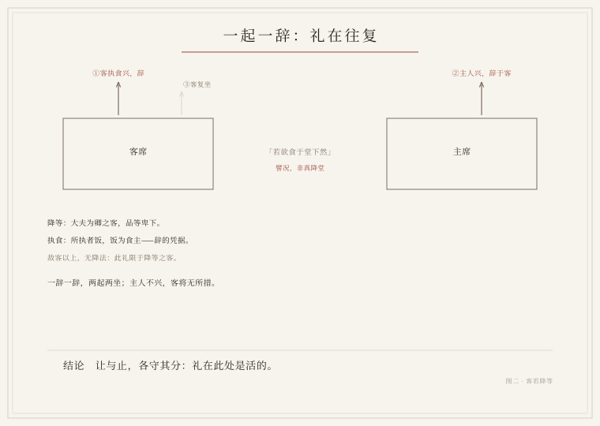

曲礼上 · 一·六十二 · 第 60 课
客人位卑，不敢当主人亲自陪食：端起盛饭的器起身辞谢，像要下堂去吃；主人也起身辞谢，客人才复坐进食。
说什么事：客若降等，执食兴辞。主人兴，辞于客，然后客坐。
落在哪一层：仪。上节讲物之向，此节讲人之起坐。
为何编在此位：一·五十九至一·六十一皆言陈设，此节始言动作；陈既定，乃有应对。
【经】客若降等，執食興辭。主人興，辭於客，然後客坐。
【注】辭者，辭主人之臨己食，若欲食於堂下然。復坐。
降等 疏：「降，下等也，谓大夫为卿之客，其品等卑下也。」
执食兴辞 注「辞主人之临己食」。疏：「执，捉也。食，饭也。兴，起也。客既卑，故未食必先捉饭而起，以辞谢主人之临己也。」
若欲食于堂下然 注：「若欲食于堂下然。」疏：「堂下是卑者食处。」此是譬况，非真降堂。
饭为食主 疏：「饭为食主，故特执之也。」所执者饭，以其为一餐之主。
主人兴，辞于客，然后客坐 疏：「主人见客执饭起，故主人亦起，辞止之；则客从辞而止，乃坐食，复坐也。」
敌客无降法 疏引《公食礼》「大夫相食，宾执粱与湆，之西序端」，「无降法也」。
客人若位卑一等，就端着饭起身辞谢（像要到堂下去吃）。主人也起身，向客人辞谢（请他不必如此），然后客人才复坐进食。
一节写两次「起」：客起而辞，主人起而辞。客人以辞让为敬，主人以辞止为敬。礼的往复，就在这一起一坐之间完成；不是谁压谁，是两个人各守其分。
第一层 降等 礼随分设。位卑之客，不敢与主人平坐而食，故有「辞」这一番动作。此礼之所以有，正因分有差；若无差，则无此辞。
第二层 执食 所执者不是杯、不是箸，是饭。疏说「饭为食主」。辞的时候手里要有物，物是辞的凭据：我端着你的饭，正要还给你。
第三层 两起两坐 客起，主人亦起；主人辞，客乃坐。一个动作引来一个动作，礼在此处是活的——不是客单方面示谦，主人须接得住。
第四层 敌客无降法 疏说得很断：敌客以上，全无欲降之礼。可见此节不是通礼，是「降等」之客的礼。读礼最怕一律，此节自标其限。
与今日何干 今人宴客，主人让上座，客人推辞，主人再让——即此两起两坐之意。位卑者不敢僭，位尊者不使其屈，两端都做到了，席才安。
| 左 | 右 |
|---|---|
| 客若降等 | 大夫为卿之客，品等卑下 |
| 执食兴辞 | 执饭而起，辞主人之临己食 |
| 若欲食于堂下 | 譬况，非真降堂 |
| 主人兴，辞于客 | 主人起而辞止之 |
| 然后客坐 | 客从辞而止，复坐进食 |
| 敌客无降法 | 此礼限于降等之客 |
画堂上两席：前一席空着，席心有一只小巧的饭器被端起后留在原处（器身微倾、旁有一道取器的手痕）；后一席席面平整，席前置一双并拢的屦。两席之间地上有一道短短的起坐痕。不画人、不写文字。赭色只在饭器口沿与屦鼻。
